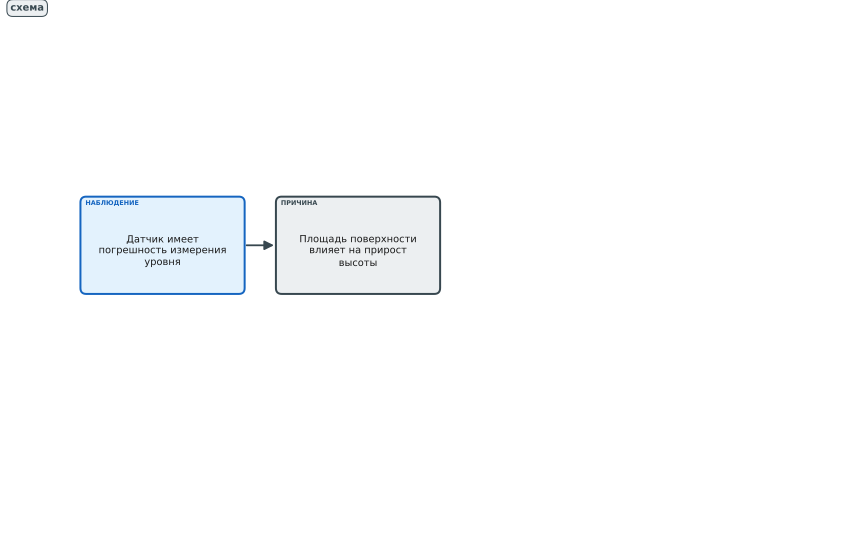
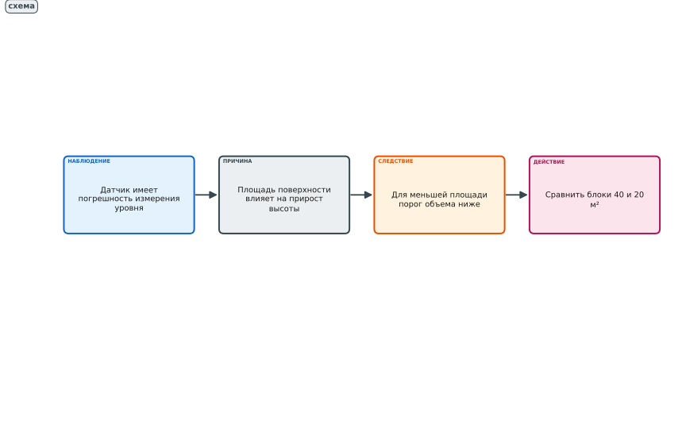
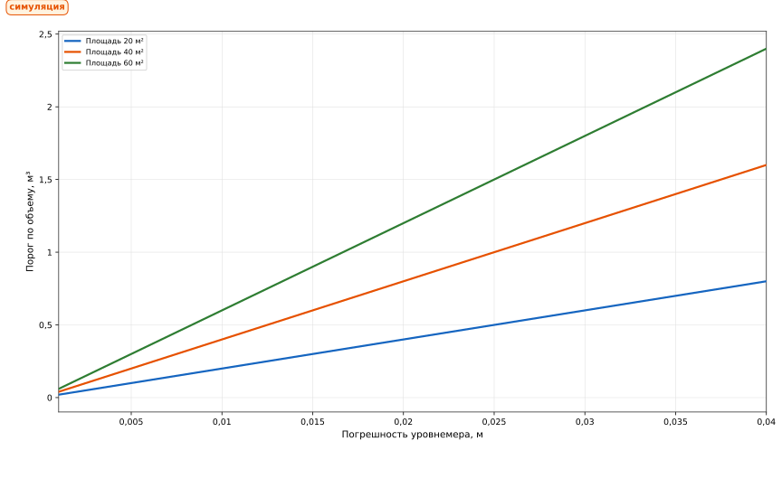
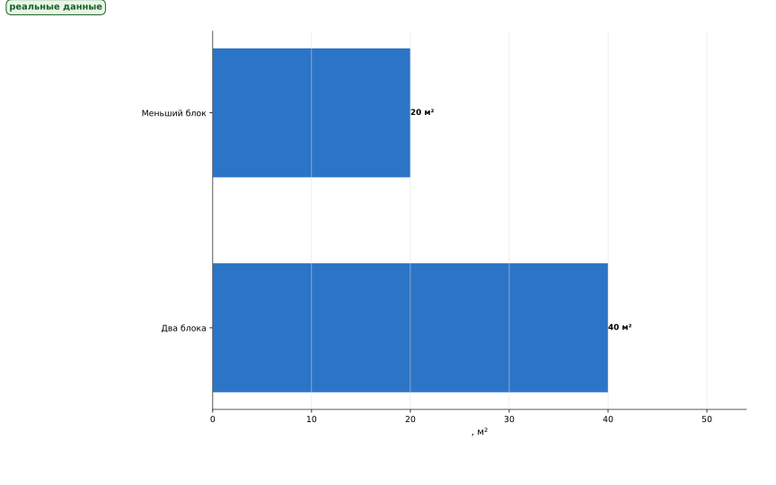

Стр. 233 · 4.1.1. ПРИЗНАКИ ПРОЯВЛЕНИЙ
Рис. 4.2. Влияние площади уровня жидкости и чувствительности уровня на регистрируемый минимальный объем проявления:
Признаки проявлений; ликвидация нефтегазопроявлений при бурении скважинШаг 4 из 26
В книге: «Что определяет чувствительность уровнемера» стр. 233–234
Опирается на: шаг 2 «Почему уровень раствора растет» (предпосылка), шаг 3 «Как проверить исходный уровень» (предпосылка)
Уровнемер измеряет высоту поверхности жидкости.
Минимальный различимый объем зависит и от погрешности прибора, и от площади емкости.
Пороговая идея. Привязать порог по объему к площади поверхности и погрешности уровнемера. модель






Почему меньшая емкость замечает тот же приток раньше?
Допущения: Условная схема; блоки не задают временной масштаб или размеры оборудования.; Площади даны в учебнике; пределы шкалы погрешности условные..
Порог зависит от площади свободной поверхности и чувствительности уровнемера. Это наименьший объем, различимый по датчику. Формула задает наименьший объем притока, различимый по уровню. стр. 233
«Влияние площади уровня жидкости и чувствительности уровня на регистрируемый минимальный объем проявления:»
«Минимальный объем флюида (м³), поступившего в скважину, который может быть зафиксирован устройствами измерения уровня, определяется равенством»
В расчете используют абсолютную погрешность уровнемера и площадь поверхности приемных емкостей. Порог по объему зависит одновременно от площади и чувствительности уровня. стр. 233
«абсолютная погрешность датчика уровнемера; $S$ — площадь поверхности жидкости в приемных емкостях.»
«Точность реакции уровнемера, таким образом, зависит как от его чувствительности, так и от площади измеряемого уровня жидкости.»
График автора построен для блоков площадью 20 м². В примере переход от 40 м² к 20 м² увеличивает реакцию датчика в 2 раза. Отключение одной из трех емкостей повышает чувствительность в 1,5 раза. стр. 233–234
«График построен с учетом применения в циркуляционной системе стандартных блоков емкостей с площадью 20 м².»
«Переключение блоков площадью 40 м² на блок 20 м² (выключение одной из двух используемых емкостей) равнозначно увеличению реакции устройства в 2 раза, а отключение одной из трех используемых при циркуляции емкостей эквивалентно повышению чувствительности системы в 1,5 раза.»

Условие. Погрешность уровнемера не меняется.
Итог. Реакция увеличивается в 2 раза в первом случае, чувствительность — в 1,5 раза во втором.
Минимальный различимый объем стр. 233
| Обозначение | Что это | Единицы |
|---|---|---|
| $\Delta V_{\min}$ | минимальный различимый объем | м³ |
| $\varepsilon$ | абсолютная погрешность уровня | — |
| $S$ | площадь поверхности | м² |
Ошибка: Уровнемер прямо измеряет объем притока.
На самом деле: Он измеряет уровень раствора, а чувствительность к изменению объема зависит от площади емкости и погрешности.
Привязать порог по объему к площади поверхности и погрешности уровнемера.
Проверка контекста события в журнале перед интерпретацией метрики.
Где аналогия перестаёт работать: События в стволе физические, а показания могут запаздывать.
За рабочими решениями обращаются к действующему регламенту и ответственному специалисту; этот узел объясняет учебный пример.
События в стволе физические, а показания могут запаздывать.
Верный ответ: Становится легче заметить меньший объем
В примере переход от 40 м² к 20 м² увеличивает реакцию датчика в 2 раза. Где это в тексте (стр. 233) →
раза
Верный ответ: 2 раза
В примере переход от 40 м² к 20 м² увеличивает реакцию датчика в 2 раза. Где это в тексте (стр. 234) →
Все утверждения шага с дословной цитатой автора и страницей книги (по PDF).
График связывает площадь поверхности и чувствительность уровнемера с минимальным регистрируемым объемом. наблюдение
«Влияние площади уровня жидкости и чувствительности уровня на регистрируемый минимальный объем проявления:»
Формула задает наименьший объем притока, различимый по уровню. наблюдение
«Минимальный объем флюида (м³), поступившего в скважину, который может быть зафиксирован устройствами измерения уровня, определяется равенством»
В расчете используют абсолютную погрешность уровнемера и площадь поверхности приемных емкостей. наблюдение
«абсолютная погрешность датчика уровнемера; $S$ — площадь поверхности жидкости в приемных емкостях.»
Порог по объему зависит одновременно от площади и чувствительности уровня. наблюдение
«Точность реакции уровнемера, таким образом, зависит как от его чувствительности, так и от площади измеряемого уровня жидкости.»
График автора построен для блоков площадью 20 м². наблюдение
«График построен с учетом применения в циркуляционной системе стандартных блоков емкостей с площадью 20 м².»
При переходе от 40 м² к 20 м² реакция увеличивается в 2 раза; при отключении одной из трех емкостей чувствительность вырастает в 1,5 раза. наблюдение
«Переключение блоков площадью 40 м² на блок 20 м² (выключение одной из двух используемых емкостей) равнозначно увеличению реакции устройства в 2 раза, а отключение одной из трех используемых при циркуляции емкостей эквивалентно повышению чувствительности системы в 1,5 раза.»
Стр. 233 · 4.1.1. ПРИЗНАКИ ПРОЯВЛЕНИЙ
Рис. 4.2. Влияние площади уровня жидкости и чувствительности уровня на регистрируемый минимальный объем проявления:
Стр. 233 · 4.1.1. ПРИЗНАКИ ПРОЯВЛЕНИЙ
$$1 - S = 20 \text{ м}^2; 2 - S = 40 \text{ м}^2; 3 - S = 60 \text{ м}^2$$
Стр. 233 · 4.1.1. ПРИЗНАКИ ПРОЯВЛЕНИЙ
Минимальный объем флюида (м³), поступившего в скважину, который может быть зафиксирован устройствами измерения уровня, определяется равенством
Стр. 233 · 4.1.1. ПРИЗНАКИ ПРОЯВЛЕНИЙ
$$\Delta V_{\min} = \varepsilon S,$$
Стр. 233 · 4.1.1. ПРИЗНАКИ ПРОЯВЛЕНИЙ
где $\varepsilon$ — абсолютная погрешность датчика уровнемера; $S$ — площадь поверхности жидкости в приемных емкостях.
Стр. 233 · 4.1.1. ПРИЗНАКИ ПРОЯВЛЕНИЙ
Точность реакции уровнемера, таким образом, зависит как от его чувствительности, так и от площади измеряемого уровня жидкости. Посредством изменения площади поверхности раствора можно менять минимальное значение регистрируемого объема проявления, как это показано на рис. 4.2. График построен с учетом применения в циркуляционной системе стандартных блоков емкостей с площадью 20 м². Из графика можно видеть, что выключение из циркуляции отдельных приемных емкостей равнозначно повышению эффективности уровнемера. Переключение блоков площадью 40 м² на блок 20 м² (выключение одной из двух используемых емкостей) равнозначно увеличению реакции устройства в 2 раза, а отключение одной из трех используемых при циркуляции емкостей эквивалентно повышению чувствительности системы в 1,5 раза.
От чего зависит чувствительность уровнемера
Ссылки в ответе ведут к исходному тексту.